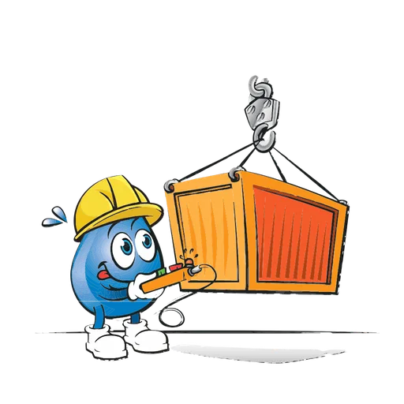
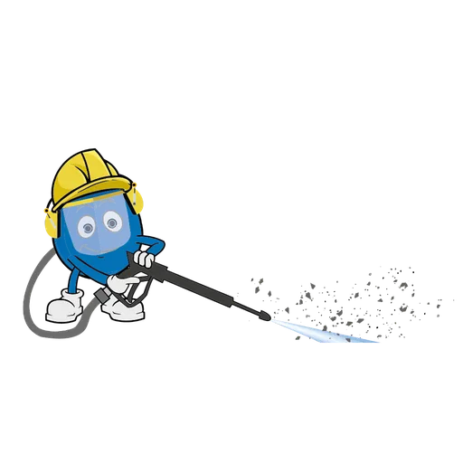
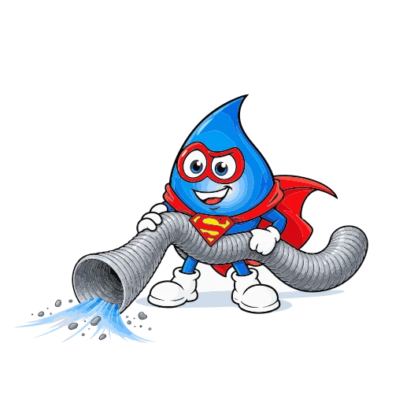
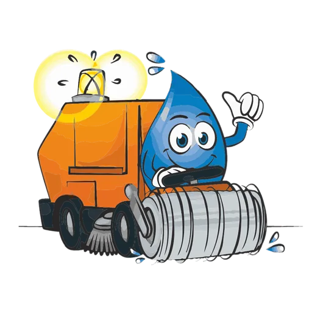

Location de matériel pour professionnels
Le parc technique d’ADOC, disponible à la location : pompes haute pression, matériel de génie civil, rénovation de canalisations, gestion des eaux et chaufferies mobiles. Pour les entreprises du bâtiment, des travaux publics et de l’assainissement.
Entremont · Martigny · Sion · Sierre · Villeneuve
Consulter le catalogueNotre matériel de location
-

Génie civil Pelles rétro, dumpers, bennes, pilonneuses et chargeuses pour vos travaux de terrassement et d’aménagement. - Gestion des eaux de chantier et déshydratation des boues Bennes étanches, traitement du pH et unités de déshydratation pour gérer et traiter les eaux et les boues de chantier.
- Groupes électrogènes et compresseurs Alimentation électrique autonome et air comprimé, de la petite installation au groupe diesel sur remorque.
-

Pompes haute pression (300 à 3000 bar) Pompes et robots haute pression pour le décapage, le nettoyage industriel et l’hydrodémolition, jusqu’à 3000 bar. -

Aspirateurs et pompes Aspirateurs industriels, pompes immergées et pompes à vide pour l’évacuation des eaux claires ou chargées. - Petit outillage Marteaux, meuleuses, carotteuses et outillage de chantier pour la démolition, le perçage et la finition.
-
 Chauffage, ventilation, déshumidification et purification d’air
Chauffages, déshumidificateurs, extracteurs et purificateurs pour l’assèchement, la ventilation et le traitement de l’air.
Chauffage, ventilation, déshumidification et purification d’air
Chauffages, déshumidificateurs, extracteurs et purificateurs pour l’assèchement, la ventilation et le traitement de l’air.
-

Levage, nacelles, véhicules et balayage Grues, nacelles, pick-up et balayeuse pour le levage, le travail en hauteur, le transport et le nettoyage de voirie. - Rénovation des canalisations Robots fraiseurs, polymérisation UV, obturateurs et matériel de test pour la réhabilitation sans tranchée des canalisations.
- Travaux spéciaux ATEX Matériel et main-d’œuvre spécialisée pour les interventions en milieu confiné et atmosphère explosible (ATEX).
- Chaufferies mobiles Chaufferies électriques ou à mazout sur remorque pour le chauffage temporaire et l’assèchement de chantier.